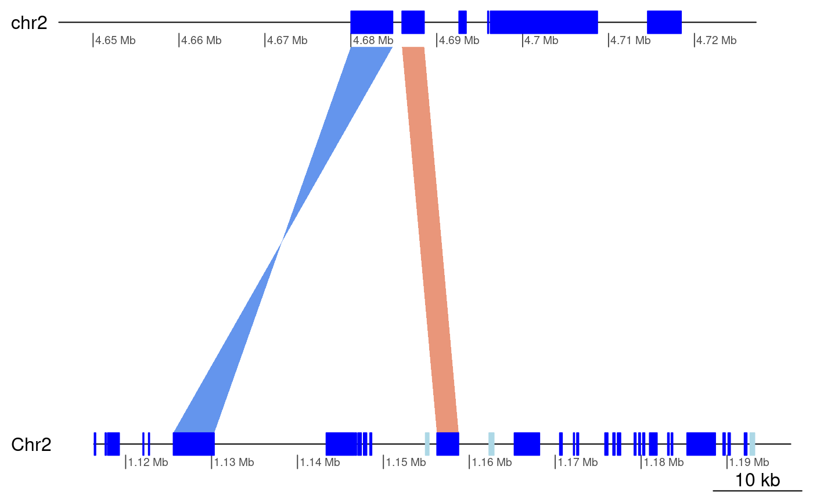
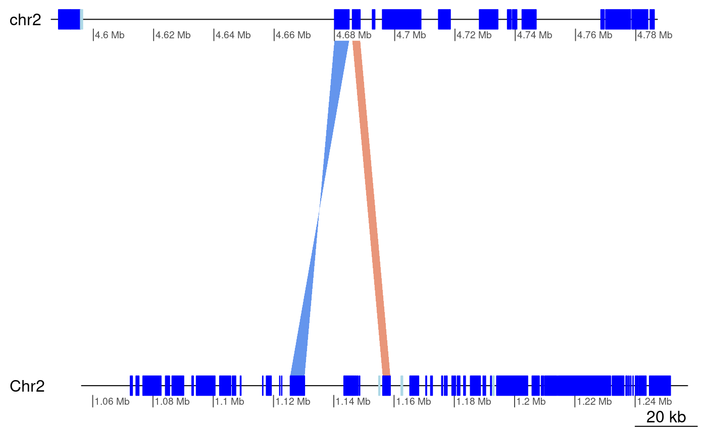
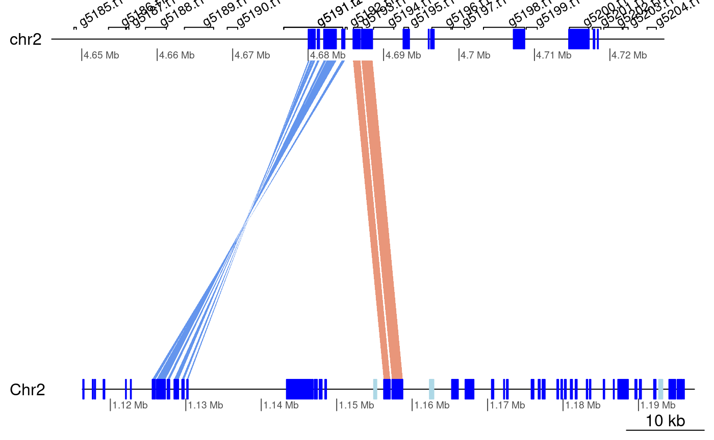

Load packages and data
See ?OikScrambling:::loadAllGenomes, ?OikScrambling:::loadAllTranscriptsGR, and vignette("LoadGenomicBreaks", package = "OikScrambling") for how the different objects are prepared.
library('OikScrambling') |> suppressPackageStartupMessages()
(genomes <- OikScrambling:::loadAllGenomes(compat = F))## List of length 6
## names(6): OKI2018.I69 OSKA2016v1.9 Bar2.p4 KUM.M3.7f AOM.5.5f OdB3
(transcripts <- OikScrambling:::loadAllTranscriptsGR(compat = F) |> suppressWarnings())## List of length 8
## names(8): OKI2018.I69 OSKA2016v1.9 Bar2.p4 KUM.M3.7f AOM.5.5f OdB3 Ply Ros
(load("BreakPoints.Rdata"))## [1] "gbs" "unal" "coa" "unmap" "unalMap" "tra"
## [7] "tra2" "coa2" "unmap2" "wgo" "longShort"Orthogroups
Load Orthogroups for Oikopleura from the BreakpointsData package with the OikScrambling::load_one_to_ones() function. Original file is in /bucket/LuscombeU/common/Breakpoints/Orthologues/selTun+Apps+Amph+Vert_lp_100clstr_blast/OrthoFinder/Results_Oct07/Phylogenetic_Hierarchical_Orthogroups/N19.tsv. See news(package = "BreakpointsData") for inspecting changes in more details.
# Example for loading all orthogroups:
OikScrambling:::load_one_to_ones(system.file("extdata/OrthoFinder/N19.tsv", package = "BreakpointsData"))## DataFrame with 5162 rows and 9 columns
## HOG OG Gene Tree Parent Clade
## <character> <character> <character>
## 1 N19.HOG0000000 OG0000000 n15
## 2 N19.HOG0000002 OG0000000 n88
## 3 N19.HOG0000003 OG0000000 n96
## 4 N19.HOG0000004 OG0000000 n103
## 5 N19.HOG0000008 OG0000000 n156
## ... ... ... ...
## 5158 N19.HOG0014641 OG0014948 n0
## 5159 N19.HOG0014642 OG0014949 n0
## 5160 N19.HOG0014644 OG0014951 n0
## 5161 N19.HOG0014646 OG0014953 n0
## 5162 N19.HOG0014647 OG0014954 n0
## AOM-5-5f.prot.longest.fa_1 Bar2_p4.Flye.prot.longest.fa_1
## <character> <character>
## 1 AOM-5-5f.g9811.t1 Bar2_p4_Flye.g12146.t1
## 2 AOM-5-5f.g10661.t1 Bar2_p4_Flye.g12951.t1
## 3 AOM-5-5f.g10128.t1 Bar2_p4_Flye.g12454.t1
## 4 AOM-5-5f.g9214.t1 Bar2_p4_Flye.g11186.t1
## 5 AOM-5-5f.g2181.t1 Bar2_p4_Flye.g8280.t1
## ... ... ...
## 5158 AOM-5-5f.g9913.t1 Bar2_p4_Flye.g12245.t1
## 5159 AOM-5-5f.g9950.t1 Bar2_p4_Flye.g12277.t1
## 5160 AOM-5-5f.g9966.t1 Bar2_p4_Flye.g12292.t1
## 5161 AOM-5-5f.g9981.t1 Bar2_p4_Flye.g12306.t1
## 5162 AOM-5-5f.g9987.t1 Bar2_p4_Flye.g12313.t1
## KUM-M3-7f.prot.longest.fa_1 OKI2018_I69.v2.prot.longest.fa_1
## <character> <character>
## 1 KUM-M3-7f.g12730.t1 OKI2018_I69.v2.g1680..
## 2 KUM-M3-7f.g14801.t1 OKI2018_I69.v2.g7899..
## 3 KUM-M3-7f.g11014.t1 OKI2018_I69.v2.g1507..
## 4 KUM-M3-7f.g12676.t1 OKI2018_I69.v2.g1675..
## 5 KUM-M3-7f.g5128.t1 OKI2018_I69.v2.g1156..
## ... ... ...
## 5158 KUM-M3-7f.g9515.t1 OKI2018_I69.v2.g1353..
## 5159 KUM-M3-7f.g12745.t1 OKI2018_I69.v2.g1681..
## 5160 KUM-M3-7f.g12085.t1 OKI2018_I69.v2.g1614..
## 5161 KUM-M3-7f.g12067.t1 OKI2018_I69.v2.g1613..
## 5162 KUM-M3-7f.g12060.t1 OKI2018_I69.v2.g1612..
## OSKA2016v1.9.prot.longest.fa_1 OdB3.v1.0.prot.fa_1.nohaplo
## <character> <character>
## 1 OSKA2016v1.9.g12947.t1 OdB3.GSOIDT00001753001
## 2 OSKA2016v1.9.g12103.t1 OdB3.GSOIDT00003131001
## 3 OSKA2016v1.9.g12629.t1 OdB3.GSOIDT00010574001
## 4 OSKA2016v1.9.g13527.t1 OdB3.GSOIDT00005080001
## 5 OSKA2016v1.9.g9587.t1 OdB3.GSOIDT00003802001
## ... ... ...
## 5158 OSKA2016v1.9.g12845.t1 OdB3.GSOIDT00006454001
## 5159 OSKA2016v1.9.g12805.t1 OdB3.GSOIDT00006471001
## 5160 OSKA2016v1.9.g12790.t1 OdB3.GSOIDT00006489001
## 5161 OSKA2016v1.9.g12773.t1 OdB3.GSOIDT00006508001
## 5162 OSKA2016v1.9.g12766.t1 OdB3.GSOIDT00006515001
# Example for loading a pair
OikScrambling:::load_one_to_ones( system.file("extdata/OrthoFinder/N19.tsv", package = "BreakpointsData")
, c("Bar2_p4.Flye.prot.longest.fa_1", "OSKA2016v1.9.prot.longest.fa_1"))## DataFrame with 9172 rows and 5 columns
## HOG OG Gene Tree Parent Clade
## <character> <character> <character>
## 1 N19.HOG0000000 OG0000000 n15
## 2 N19.HOG0000002 OG0000000 n88
## 3 N19.HOG0000003 OG0000000 n96
## 4 N19.HOG0000004 OG0000000 n103
## 5 N19.HOG0000005 OG0000000 n122
## ... ... ... ...
## 9168 N19.HOG0017512 OG0028110 -
## 9169 N19.HOG0017517 OG0028116 -
## 9170 N19.HOG0017521 OG0028120 -
## 9171 N19.HOG0017528 OG0028128 -
## 9172 N19.HOG0017530 OG0028130 -
## Bar2_p4.Flye.prot.longest.fa_1 OSKA2016v1.9.prot.longest.fa_1
## <character> <character>
## 1 Bar2_p4_Flye.g12146.t1 OSKA2016v1.9.g12947.t1
## 2 Bar2_p4_Flye.g12951.t1 OSKA2016v1.9.g12103.t1
## 3 Bar2_p4_Flye.g12454.t1 OSKA2016v1.9.g12629.t1
## 4 Bar2_p4_Flye.g11186.t1 OSKA2016v1.9.g13527.t1
## 5 Bar2_p4_Flye.g11443.t1 OSKA2016v1.9.g14131.t1
## ... ... ...
## 9168 Bar2_p4_Flye.g7540.t1 OSKA2016v1.9.g6477.t1
## 9169 Bar2_p4_Flye.g801.t1 OSKA2016v1.9.g1518.t1
## 9170 Bar2_p4_Flye.g8448.t1 OSKA2016v1.9.g9813.t1
## 9171 Bar2_p4_Flye.g9382.t1 OSKA2016v1.9.g10500.t1
## 9172 Bar2_p4_Flye.g9616.t1 OSKA2016v1.9.g9098.t1Prepare GBreak objects
orthoPairToGBreaks <- function(name1, name2, annot1, annot2, treeName="N19", HOGs=NULL) {
if(is.null(HOGs))
HOGs <- OikScrambling:::load_one_to_ones(
system.file(paste0("extdata/OrthoFinder/",treeName,".tsv"), package = "BreakpointsData"),
c(name1, name2))
IDs2GRanges <- function (IDs, annot) {
prefix <- Biobase::lcPrefix(IDs) # Guess prefix in transcript IDs from HOG files
not_prefix <- Biobase::lcPrefix(annot$tx_name) # Remove trailing characters that are part of the name
not_prefix <- paste0(not_prefix,"$") # Anchor to end of the string
prefix <- sub(not_prefix, "", prefix) # Finalise prefix
IDs <- sub(prefix, "", IDs) # Remove prefix from IDS
names(annot) <- annot$tx_name # Store transcript name in names slot
gr <- annot[IDs] # Sort by ID
strand(gr) <- "*" # Make strandless
gr # Return the object
}
gb <- IDs2GRanges(HOGs[,name1], annot1)
gb$query <- IDs2GRanges(HOGs[,name2], annot2)
gb <- GenomicBreaks:::GBreaks(gb)
gb$HOG <- HOGs$HOG
gb$OG <- HOGs$OG
sort(gb)
}
flagLongShort_ <- function(gr, annot) {
genome <- gr |> genome() |> unique()
flagLongShort(gr, annot[[genome]])
}
orthoPairToGBreaks_all_Oiks <- function(treeName=NULL, HOGs=NULL) {
orthoPairs <- SimpleList()
orthoPairs$Oki_Osa <- orthoPairToGBreaks("OKI2018_I69.v2.prot.longest.fa_1", "OSKA2016v1.9.prot.longest.fa_1", transcripts$OKI2018.I69, transcripts$OSKA2016v1.9, treeName, HOGs)
orthoPairs$Oki_Bar <- orthoPairToGBreaks("OKI2018_I69.v2.prot.longest.fa_1", "Bar2_p4.Flye.prot.longest.fa_1", transcripts$OKI2018.I69, transcripts$Bar2.p4, treeName, HOGs)
orthoPairs$Oki_Kum <- orthoPairToGBreaks("OKI2018_I69.v2.prot.longest.fa_1", "KUM-M3-7f.prot.longest.fa_1", transcripts$OKI2018.I69, transcripts$KUM.M3.7f, treeName, HOGs)
orthoPairs$Oki_Aom <- orthoPairToGBreaks("OKI2018_I69.v2.prot.longest.fa_1", "AOM-5-5f.prot.longest.fa_1", transcripts$OKI2018.I69, transcripts$AOM.5.5f, treeName, HOGs)
orthoPairs$Oki_Nor <- orthoPairToGBreaks("OKI2018_I69.v2.prot.longest.fa_1", "OdB3.v1.0.prot.fa_1.nohaplo", transcripts$OKI2018.I69, transcripts$OdB3, treeName, HOGs)
orthoPairs$Osa_Bar <- orthoPairToGBreaks("OSKA2016v1.9.prot.longest.fa_1", "Bar2_p4.Flye.prot.longest.fa_1", transcripts$OSKA2016v1.9, transcripts$Bar2.p4, treeName, HOGs)
orthoPairs$Osa_Oki <- orthoPairToGBreaks("OSKA2016v1.9.prot.longest.fa_1", "OKI2018_I69.v2.prot.longest.fa_1", transcripts$OSKA2016v1.9, transcripts$OKI2018.I69, treeName, HOGs)
orthoPairs$Osa_Kum <- orthoPairToGBreaks("OSKA2016v1.9.prot.longest.fa_1", "KUM-M3-7f.prot.longest.fa_1", transcripts$OSKA2016v1.9, transcripts$KUM.M3.7f, treeName, HOGs)
orthoPairs$Osa_Aom <- orthoPairToGBreaks("OSKA2016v1.9.prot.longest.fa_1", "AOM-5-5f.prot.longest.fa_1", transcripts$OSKA2016v1.9, transcripts$AOM.5.5f, treeName, HOGs)
orthoPairs$Osa_Nor <- orthoPairToGBreaks("OSKA2016v1.9.prot.longest.fa_1", "OdB3.v1.0.prot.fa_1.nohaplo", transcripts$OSKA2016v1.9, transcripts$OdB3, treeName, HOGs)
orthoPairs$Bar_Osa <- orthoPairToGBreaks("Bar2_p4.Flye.prot.longest.fa_1", "OSKA2016v1.9.prot.longest.fa_1", transcripts$Bar2.p4, transcripts$OSKA2016v1.9, treeName, HOGs)
orthoPairs$Bar_Oki <- orthoPairToGBreaks("Bar2_p4.Flye.prot.longest.fa_1", "OKI2018_I69.v2.prot.longest.fa_1", transcripts$Bar2.p4, transcripts$OKI2018.I69, treeName, HOGs)
orthoPairs$Bar_Kum <- orthoPairToGBreaks("Bar2_p4.Flye.prot.longest.fa_1", "KUM-M3-7f.prot.longest.fa_1", transcripts$Bar2.p4, transcripts$KUM.M3.7f, treeName, HOGs)
orthoPairs$Bar_Aom <- orthoPairToGBreaks("Bar2_p4.Flye.prot.longest.fa_1", "AOM-5-5f.prot.longest.fa_1", transcripts$Bar2.p4, transcripts$AOM.5.5f, treeName, HOGs)
orthoPairs$Bar_Nor <- orthoPairToGBreaks("Bar2_p4.Flye.prot.longest.fa_1", "OdB3.v1.0.prot.fa_1.nohaplo", transcripts$Bar2.p4, transcripts$OdB3, treeName, HOGs)
orthoPairs <- sapply(orthoPairs, flagLongShort_, longShort)
orthoPairs
}
orthoPairs <- orthoPairToGBreaks_all_Oiks("N19")
orthoPairs$Ply_Ros <- orthoPairToGBreaks("C_int_P.prot.longest.fa_1", "C_int_R.prot.longest.fa_1"
, transcripts$Ply, transcripts$Ros, treeName="N20")
# Same as above but using the same core orthogroups for all species.
orthoPairs_core <- orthoPairToGBreaks_all_Oiks("N3")
orthoPairs_core$Ply_Ros <- orthoPairToGBreaks("C_int_P.prot.longest.fa_1", "C_int_R.prot.longest.fa_1"
, transcripts$Ply, transcripts$Ros, treeName="N3")
orthoPairs_one2oneInOiks <-
orthoPairToGBreaks_all_Oiks(treeName = NULL,
HOGs = OikScrambling:::load_one_to_ones(
system.file("extdata/OrthoFinder/N19.tsv", package = "BreakpointsData")))
sapply(orthoPairs, length)## Oki_Osa Oki_Bar Oki_Kum Oki_Aom Oki_Nor Osa_Bar Osa_Oki Osa_Kum Osa_Aom Osa_Nor
## 9538 9273 11525 9604 8771 9172 9538 9465 10379 8415
## Bar_Osa Bar_Oki Bar_Kum Bar_Aom Bar_Nor Ply_Ros
## 9172 9273 9223 9250 8508 5438
sapply(orthoPairs_core, length)## Oki_Osa Oki_Bar Oki_Kum Oki_Aom Oki_Nor Osa_Bar Osa_Oki Osa_Kum Osa_Aom Osa_Nor
## 6794 6697 8315 6902 6118 6707 6794 6697 7644 5981
## Bar_Osa Bar_Oki Bar_Kum Bar_Aom Bar_Nor Ply_Ros
## 6707 6697 6643 6804 6151 2582
sapply(orthoPairs_one2oneInOiks, length)## Oki_Osa Oki_Bar Oki_Kum Oki_Aom Oki_Nor Osa_Bar Osa_Oki Osa_Kum Osa_Aom Osa_Nor
## 5162 5162 5162 5162 5162 5162 5162 5162 5162 5162
## Bar_Osa Bar_Oki Bar_Kum Bar_Aom Bar_Nor
## 5162 5162 5162 5162 5162Problem: some annotations overlap
transcripts$Bar2.p4 |> length()## [1] 15741## [1] 14262
flagOverlaps <- function(gr) {
# Find overlaps
ov <- findOverlaps(gr)
# Index of self hits in the gr object
idx <- queryHits(ov[!isSelfHit(ov)])
# Convert to Boolean indexing the gr object
seq_along(gr) %in% idx
}
transcripts$Bar2.p4[flagOverlaps(transcripts$Bar2.p4)]## GRanges object with 2668 ranges and 5 metadata columns:
## seqnames ranges strand | tx_id tx_name
## <Rle> <IRanges> <Rle> | <integer> <character>
## g107.t2 Chr1 495446-496292 + | 58 g107.t2
## g107.t1 Chr1 495446-496688 + | 59 g107.t1
## g138.t1 Chr1 687958-689814 + | 76 g138.t1
## g138.t2 Chr1 687958-689814 + | 77 g138.t2
## g147.t2 Chr1 748328-751932 + | 82 g147.t2
## ... ... ... ... . ... ...
## g13975.t2 YSR 4098404-4105602 - | 15657 g13975.t2
## g14058.t1 YSR 4778101-4778538 - | 15701 g14058.t1
## g14059.t1 YSR 4778480-4782151 - | 15702 g14059.t1
## g14064.t2 YSR 4817799-4819944 - | 15705 g14064.t2
## g14064.t1 YSR 4817799-4820671 - | 15706 g14064.t1
## dNdS_GUIDANCE2 dNdS_HmmCleaner dNdS_PRANK
## <numeric> <numeric> <numeric>
## g107.t2 NA NA NA
## g107.t1 NA NA NA
## g138.t1 NA NA NA
## g138.t2 0.05054 0.05386 0.05386
## g147.t2 NA NA NA
## ... ... ... ...
## g13975.t2 NA NA NA
## g14058.t1 NA NA NA
## g14059.t1 NA NA NA
## g14064.t2 NA NA NA
## g14064.t1 NA NA NA
## -------
## seqinfo: 68 sequences from Bar2.p4 genome
# Show examples
orthoPairs$Oki_Osa[flagOverlaps(orthoPairs$Oki_Osa)]## GBreaks object with 93 ranges and 9 metadata columns:
## seqnames ranges strand | tx_id tx_name
## <Rle> <IRanges> <Rle> | <integer> <character>
## g499.t1 chr1 2110061-2117154 * | 272 g499.t1
## g500.t1 chr1 2115711-2116788 * | 2381 g500.t1
## g544.t1 chr1 2238352-2256657 * | 297 g544.t1
## g545.t1 chr1 2251048-2252855 * | 2402 g545.t1
## g985.t1 chr1 3781719-3784744 * | 518 g985.t1
## ... ... ... ... . ... ...
## g15884.t1 XSR 8785428-8786009 * | 15900 g15884.t1
## g16057.t1 XSR 9342752-9345613 * | 18123 g16057.t1
## g16058.t1 XSR 9344384-9344779 * | 15985 g16058.t1
## g16592.t1 XSR 10958372-10959713 * | 18454 g16592.t1
## g16593.t1 XSR 10958914-10959511 * | 16264 g16593.t1
## dNdS_GUIDANCE2 dNdS_HmmCleaner dNdS_PRANK query
## <numeric> <numeric> <numeric> <GRanges>
## g499.t1 0.0299 0.03004 0.0329 Chr1:717839-724867
## g500.t1 NA NA NA Chr1:718410-719881
## g544.t1 NA NA NA Chr1:1777743-1781983
## g545.t1 NA NA NA Chr1:1783570-1784116
## g985.t1 NA NA NA Chr1:2597661-2601166
## ... ... ... ... ...
## g15884.t1 0.06523 0.09376 0.08999 XSR:1917337-1918103
## g16057.t1 NA NA NA XSR:5950541-5952986
## g16058.t1 0.00761 0.00524 0.00524 XSR:5950957-5951353
## g16592.t1 NA NA NA XSR:10797233-10798365
## g16593.t1 NA NA NA XSR:10797613-10797896
## HOG OG Arm
## <character> <character> <factor>
## g499.t1 N19.HOG0002425 OG0000263 short
## g500.t1 N19.HOG0007945 OG0003451 short
## g544.t1 N19.HOG0003237 OG0000486 short
## g545.t1 N19.HOG0015828 OG0019308 short
## g985.t1 N19.HOG0012972 OG0011801 short
## ... ... ... ...
## g15884.t1 N19.HOG0013867 OG0014177 XSR
## g16057.t1 N19.HOG0007856 OG0003342 XSR
## g16058.t1 N19.HOG0013727 OG0013149 XSR
## g16592.t1 N19.HOG0016102 OG0020123 XSR
## g16593.t1 N19.HOG0016845 OG0024775 XSR
## -------
## seqinfo: 19 sequences from OKI2018.I69 genome
orthoPairs$Oki_Osa$query[flagOverlaps(orthoPairs$Oki_Osa$query)]## GRanges object with 80 ranges and 5 metadata columns:
## seqnames ranges strand | tx_id tx_name
## <Rle> <IRanges> <Rle> | <integer> <character>
## g165.t1 Chr1 717839-724867 * | 1760 g165.t1
## g166.t1 Chr1 718410-719881 * | 84 g166.t1
## g343.t1 Chr1 1555362-1560721 * | 185 g343.t1
## g344.t1 Chr1 1555709-1558669 * | 1852 g344.t1
## g1318.t1 Chr1 5426128-5431903 * | 698 g1318.t1
## ... ... ... ... . ... ...
## g14741.t1 XSR 10797613-10797896 * | 16354 g14741.t1
## g13032.t1 XSR 5203787-5206862 * | 13405 g13032.t1
## g13031.t2 XSR 5199352-5210190 * | 15385 g13031.t2
## g13679.t1 XSR 7256274-7260299 * | 13797 g13679.t1
## g13680.t1 XSR 7258070-7259639 * | 15749 g13680.t1
## dNdS_GUIDANCE2 dNdS_HmmCleaner dNdS_PRANK
## <numeric> <numeric> <numeric>
## g165.t1 0.02990 0.03004 0.03290
## g166.t1 NA NA NA
## g343.t1 NA NA NA
## g344.t1 0.04569 0.05541 0.05541
## g1318.t1 NA NA NA
## ... ... ... ...
## g14741.t1 NA NA NA
## g13032.t1 NA NA NA
## g13031.t2 0.00897 0.00897 0.00897
## g13679.t1 NA NA NA
## g13680.t1 NA NA NA
## -------
## seqinfo: 483 sequences from OSKA2016v1.9 genome
# Remove and show how much was removed
orthoPairsFiltered <- sapply(orthoPairs, function(gb) {
gb <- gb[!flagOverlaps(gb)]
gb <- gb[!flagOverlaps(gb$query)]
gb
}) |> SimpleList()
orthoPairsFiltered_core <- sapply(orthoPairs_core, function(gb) {
gb <- gb[!flagOverlaps(gb)]
gb <- gb[!flagOverlaps(gb$query)]
gb
}) |> SimpleList()
sapply(orthoPairs, length) - sapply(orthoPairsFiltered, length)## Oki_Osa Oki_Bar Oki_Kum Oki_Aom Oki_Nor Osa_Bar Osa_Oki Osa_Kum Osa_Aom Osa_Nor
## 132 131 202 166 119 98 132 114 121 103
## Bar_Osa Bar_Oki Bar_Kum Bar_Aom Bar_Nor Ply_Ros
## 98 132 119 108 125 26## Oki_Osa Oki_Bar Oki_Kum Oki_Aom Oki_Nor Osa_Bar Osa_Oki Osa_Kum Osa_Aom Osa_Nor
## 74 85 125 93 58 72 74 67 75 48
## Bar_Osa Bar_Oki Bar_Kum Bar_Aom Bar_Nor Ply_Ros
## 72 85 85 72 64 10Coalesce syntenic blocks and annotate them
coalOrtho <- function(gb) {
# Coalesce
coal <- coalesce_contigs(gb)
# Map annotations to the coalesced blocks
ov <- findOverlaps(coal, gb)
# Extract gene names mapped to each blocks
coal$geneNames <- CharacterList(split(names(gb)[subjectHits(ov)], queryHits(ov))) |> unname()
# We can use the `ov` object for query ranges as well because of the way `coal` was constructed.
coal$query$geneNames <- CharacterList(split(names(gb$query)[subjectHits(ov)], queryHits(ov))) |> unname()
# Extract dNdS values
coal$dNdS_GUIDANCE2 <- NumericList(split(gb$dNdS_GUIDANCE2 [subjectHits(ov)], queryHits(ov)))
coal$dNdS_HmmCleaner <- NumericList(split(gb$dNdS_HmmCleaner[subjectHits(ov)], queryHits(ov)))
coal$dNdS_PRANK <- NumericList(split(gb$dNdS_PRANK [subjectHits(ov)], queryHits(ov)))
# We just copy dNdS values to query ranges because they are the same.
coal$query$dNdS_GUIDANCE2 <- coal$dNdS_GUIDANCE2
coal$query$dNdS_HmmCleaner <- coal$dNdS_HmmCleaner
coal$query$dNdS_PRANK <- coal$dNdS_PRANK
# Count genes per syntenic block
coal$geneNumber <- sapply(coal$geneNames, length)
coal
}
orthoBlocks <- sapply(orthoPairsFiltered[1:15], coalOrtho) |> SimpleList()
orthoBlocks$Ply_Ros <- coalesce_contigs(orthoPairsFiltered$Ply_Ros)
orthoBlocks[ 1:15 ] <- sapply(orthoBlocks[ 1:15 ], flagLongShort_, longShort)
orthoBlocks_core <- sapply(orthoPairsFiltered_core[1:15], coalOrtho) |> SimpleList()
orthoBlocks_core$Ply_Ros <- coalesce_contigs(orthoPairsFiltered_core$Ply_Ros)
orthoBlocks_core[ 1:15 ] <- sapply(orthoBlocks_core[ 1:15 ], flagLongShort_, longShort)
sapply(orthoBlocks, length)## Oki_Osa Oki_Bar Oki_Kum Oki_Aom Oki_Nor Osa_Bar Osa_Oki Osa_Kum Osa_Aom Osa_Nor
## 6587 6461 2724 6710 6062 6298 6587 6490 6217 5357
## Bar_Osa Bar_Oki Bar_Kum Bar_Aom Bar_Nor Ply_Ros
## 6298 6459 6537 4832 3831 2695
sapply(orthoBlocks_core, length)## Oki_Osa Oki_Bar Oki_Kum Oki_Aom Oki_Nor Osa_Bar Osa_Oki Osa_Kum Osa_Aom Osa_Nor
## 4721 4704 1969 4887 4248 4633 4721 4611 4619 3844
## Bar_Osa Bar_Oki Bar_Kum Bar_Aom Bar_Nor Ply_Ros
## 4633 4702 4737 3566 2788 819Quick overview of the results
Size distribution of the blocks
stem(orthoBlocks$Oki_Osa$geneNumber)##
## The decimal point is at the |
##
## 0 | 00000000000000000000000000000000000000000000000000000000000000000000+5793
## 2 | 00000000000000000000000000000000000000000000000000000000000000000000+303
## 4 | 00000000000000000000000000000000000000000000000000000000000000000000+70
## 6 | 00000000000000000000000000000000000000000000000000000000
## 8 | 000000000000000000000000000000000000
## 10 | 0000000000000000000000000
## 12 | 0000000000000000000
## 14 | 0000000000000000
## 16 | 00000000
## 18 | 00000000
## 20 | 000
## 22 | 0
## 24 | 000
## 26 | 000
## 28 | 0
## 30 | 0
## 32 |
## 34 |
## 36 |
## 38 | 0
table(orthoBlocks$Oki_Osa$geneNumber)##
## 1 2 3 4 5 6 7 8 9 10 11 12 13 14 15 16
## 5873 270 113 96 54 38 18 24 12 14 11 6 13 9 7 3
## 17 18 19 20 21 23 24 26 27 28 31 38
## 5 5 3 2 1 1 3 1 2 1 1 1## GBreaks object with 11 ranges and 8 metadata columns:
## seqnames ranges strand | query score
## <Rle> <IRanges> <Rle> | <GRanges> <integer>
## [1] XSR 4528928-4645908 * | XSR:2954670-3018425 116981
## [2] chr2 5838991-5959986 * | Chr2:5470156-5575948 120996
## [3] PAR 16599874-16699948 * | PAR:7442672-7520546 100075
## [4] XSR 5784689-5900834 * | XSR:2547537-2661225 116146
## [5] XSR 7131851-7238581 * | XSR:3999405-4095337 106731
## [6] XSR 3436117-3526092 * | XSR:2172085-2264761 89976
## [7] PAR 10906073-11000190 * | PAR:9275473-9359780 94118
## [8] XSR 7246798-7345874 * | XSR:4104726-4194323 99077
## [9] XSR 7562507-7713904 * | XSR:3625761-3772339 151398
## [10] chr2 14727816-14844427 * | Chr2:8441071-8537126 116612
## [11] chr2 10668710-10828262 * | Chr2:5679751-5827304 159553
## geneNames dNdS_GUIDANCE2
## <CharacterList> <NumericList>
## [1] g14568.t1,g14569.t1,g14570.t1,... 0.03501, NA,0.02959,...
## [2] g5558.t1,g5559.t1,g5560.t1,... NA, NA,0.02642,...
## [3] g13147.t1,g13152.t1,g13153.t1,... NA,0.02843,0.02997,...
## [4] g14935.t1,g14939.t1,g14942.t1,... NA,0.00645, NA,...
## [5] g15372.t1,g15373.t1,g15375.t1,... NA,0.01805,0.03746,...
## [6] g14231.t1,g14232.t1,g14233.t1,... 0.0168, NA, NA,...
## [7] g11569.t1,g11570.t1,g11571.t1,... 0.02328, NA, NA,...
## [8] g15407.t1,g15408.t1,g15410.t1,... 0.00543,0.05808, NA,...
## [9] g15509.t1,g15511.t1,g15512.t4,... 0.03440,0.09182,0.03833,...
## [10] g8160.t1,g8161.t1,g8163.t1,... 0.01678,0.03361,0.01543,...
## [11] g6993.t1,g6996.t1,g6997.t2,... NA, NA,0.01518,...
## dNdS_HmmCleaner dNdS_PRANK geneNumber
## <NumericList> <NumericList> <integer>
## [1] 0.03501, NA,0.03258,... 0.03501, NA,0.03428,... 21
## [2] NA, NA,0.02642,... NA, NA,0.02756,... 23
## [3] NA,0.0285,0.0328,... NA,0.0285,0.0328,... 24
## [4] NA,0.00645, NA,... NA,0.0063, NA,... 24
## [5] NA,0.01966,0.04001,... NA,0.01939,0.04001,... 24
## [6] 0.0168, NA, NA,... 0.01823, NA, NA,... 26
## [7] 0.02575, NA, NA,... 0.02575, NA, NA,... 27
## [8] 0.00712,0.05952, NA,... 0.00893,0.05955, NA,... 27
## [9] 0.03475,0.09710,0.04044,... 0.03525,0.09034,0.03789,... 28
## [10] 0.01670,0.03300,0.01543,... 0.01938,0.03378,0.01543,... 31
## [11] NA, NA,0.01606,... NA, NA,0.01658,... 38
## Arm
## <factor>
## [1] XSR
## [2] long
## [3] long
## [4] XSR
## [5] XSR
## [6] XSR
## [7] long
## [8] XSR
## [9] XSR
## [10] long
## [11] long
## -------
## seqinfo: 19 sequences from OKI2018.I69 genome
stem(orthoBlocks$Oki_Kum$geneNumber)##
## The decimal point is 1 digit(s) to the right of the |
##
## 0 | 11111111111111111111111111111111111111111111111111111111111111111111+2562
## 2 | 02234455566677890011224679
## 4 | 022478900445667
## 6 | 555589156
## 8 | 137467
## 10 | 223467788
## 12 |
## 14 | 239
## 16 | 10
## 18 | 079
## 20 | 0
## 22 |
## 24 |
## 26 | 9
## 28 |
## 30 | 8
## 32 |
## 34 | 6
## 36 | 7
## 38 |
## 40 |
## 42 | 38
## 44 | 9
## 46 | 5
table(orthoBlocks$Oki_Kum$geneNumber)##
## 1 2 3 4 5 6 7 9 10 11 12 13 14 15 17 18
## 2576 11 8 8 5 3 7 2 2 4 2 1 3 3 2 3
## 19 20 22 23 24 25 26 27 28 29 30 31 32 34 36 37
## 2 1 2 1 2 3 3 2 1 1 2 2 2 1 1 1
## 39 40 42 44 47 48 49 50 54 55 56 57 65 68 69 71
## 1 1 2 1 1 1 1 2 2 1 2 1 4 1 1 1
## 75 76 81 83 87 94 96 97 102 103 104 106 107 117 118 142
## 1 1 1 1 1 1 1 1 2 1 1 1 1 1 2 1
## 143 149 161 170 180 197 199 200 269 308 356 367 423 438 459 475
## 1 1 1 1 1 1 1 1 1 1 1 1 1 1 1 1## GBreaks object with 11 ranges and 8 metadata columns:
## seqnames ranges strand | query
## <Rle> <IRanges> <Rle> | <GRanges>
## [1] chr1 11917764-12848725 * | contig_3_1:3705872-4653985
## [2] PAR 9991049-10823433 * | contig_28_1:906-916604
## [3] XSR 1398297-2355032 * | contig_42_1:1522014-2519191
## [4] chr1 8676861-10061915 * | contig_3_1:618849-1981910
## [5] PAR 7792256-9333620 * | contig_82_1:846722-2300436
## [6] PAR 11974020-13925498 * | contig_28_1:2026940-3782149
## [7] XSR 7904454-9304595 * | contig_42_1:7880616-9254847
## [8] chr2 5748389-7696653 * | contig_24_1:12160-1868534
## [9] XSR 4988262-6642828 * | contig_42_1:4994508-6631430
## [10] XSR 9308304-11123841 * | contig_42_1:9258557-11063801
## [11] XSR 2649320-4576212 * | contig_42_1:2787081-4661476
## score geneNames dNdS_GUIDANCE2
## <integer> <CharacterList> <NumericList>
## [1] 930962 g3242.t1,g3243.t1,g3245.t1,... NA,0.07251, NA,...
## [2] 832385 g11259.t1,g11261.t1,g11262.t1,... NA, NA,0.01453,...
## [3] 956736 g13662.t1,g13663.t1,g13665.t1,... NA,0.03728,0.01538,...
## [4] 1385055 g2316.t1,g2317.t1,g2319.t1,... NA,0.01342,0.01277,...
## [5] 1541365 g10595.t1,g10596.t1,g10597.t1,... NA,0.01305,0.02206,...
## [6] 1951479 g11881.t1,g11883.t1,g11885.t1,... NA,NA,NA,...
## [7] 1400142 g15616.t1,g15617.t1,g15619.t1,... 0.01284,0.03441, NA,...
## [8] 1948265 g5514.t1,g5516.t1,g5518.t1,... NA,NA,NA,...
## [9] 1654567 g14704.t1,g14705.t1,g14706.t1,... 0.00618,0.02254, NA,...
## [10] 1815538 g16044.t1,g16046.t1,g16049.t1,... NA,0.01639,0.02433,...
## [11] 1926893 g13995.t1,g13996.t1,g13998.t1,... 0.03604,0.10111, NA,...
## dNdS_HmmCleaner dNdS_PRANK geneNumber
## <NumericList> <NumericList> <integer>
## [1] NA,0.06496, NA,... NA,0.1092, NA,... 197
## [2] NA, NA,0.01482,... NA, NA,0.01568,... 199
## [3] NA,0.03195,0.01978,... NA,0.03195,0.01978,... 200
## [4] NA,0.01342,0.01277,... NA,0.01530,0.01277,... 269
## [5] NA,0.01227,0.02460,... NA,0.01227,0.02460,... 308
## [6] NA,NA,NA,... NA,NA,NA,... 356
## [7] 0.01400,0.00844, NA,... 0.01579,0.00844, NA,... 367
## [8] NA,NA,NA,... NA,NA,NA,... 423
## [9] 0.00656,0.01781, NA,... 0.00656,0.01781, NA,... 438
## [10] NA,0.02021,0.02433,... NA,0.02021,0.02433,... 459
## [11] 0.03765,0.10611, NA,... 0.03765,0.10611, NA,... 475
## Arm
## <factor>
## [1] long
## [2] long
## [3] XSR
## [4] long
## [5] long
## [6] long
## [7] XSR
## [8] long
## [9] XSR
## [10] XSR
## [11] XSR
## -------
## seqinfo: 19 sequences from OKI2018.I69 genomeGene Order Conservation is smaller in short arms
orthoBlocks_LSnoNA <- sapply(orthoBlocks[1:15], function(gb) gb[!is.na(gb$Arm)]) |> SimpleList()
sapply(orthoBlocks_LSnoNA, length)## Oki_Osa Oki_Bar Oki_Kum Oki_Aom Oki_Nor Osa_Bar Osa_Oki Osa_Kum Osa_Aom Osa_Nor
## 6581 6459 2721 6708 6060 6254 6524 6435 6165 5305
## Bar_Osa Bar_Oki Bar_Kum Bar_Aom Bar_Nor
## 6267 6427 6497 4800 3800
df <- sapply(orthoBlocks_LSnoNA,
function(gb) tapply(gb, paste(seqnames(gb), gb$Arm), GOC))
apply(df, 2, \(x) {
tst <- t.test(x[c(1,3,5)], x[c(2,4,6)])
c(pval=tst$p.value, mx=tst$estimate[1], my=tst$estimate[2])
}) ## Oki_Osa Oki_Bar Oki_Kum Oki_Aom Oki_Nor
## pval 0.0008180622 0.00510478 0.3495793 0.001466663 0.0002307985
## mx.mean of x 0.6265961432 0.62777811 0.9443013 0.642716150 0.5826445675
## my.mean of y 0.2291568873 0.22458716 0.8546687 0.233573215 0.1993314793
## Osa_Bar Osa_Oki Osa_Kum Osa_Aom Osa_Nor
## pval 0.05446025 0.001845796 0.001317803 0.03132756 0.003227965
## mx.mean of x 0.89945292 0.629792446 0.624003632 0.97076402 0.816071953
## my.mean of y 0.58420414 0.237408326 0.229909890 0.91054704 0.509009640
## Bar_Osa Bar_Oki Bar_Kum Bar_Aom Bar_Nor
## pval 0.04620375 0.002509115 0.00887552 0.02880473 0.7430172
## mx.mean of x 0.89356892 0.628126993 0.64262873 0.88412576 0.8489394
## my.mean of y 0.58162692 0.235626438 0.24093149 0.57761530 0.8294883Fraction of the genome covered or syntenic
uncov <- BiocParallel::bplapply(orthoPairsFiltered, cleanGaps) |> SimpleList()
unsyn <- BiocParallel::bplapply(orthoBlocks, cleanGaps) |> SimpleList()
covered_tot <- sapply(orthoPairsFiltered, \(x) sum(width(x)))
syntenic_tot <- sapply(orthoBlocks, \(x) sum(width(x)))
uncovered_tot <- sapply(uncov, \(x) sum(width(x)))
unsyntenic_tot <- sapply(unsyn, \(x) sum(width(x)))
(syn_summary <- cbind(
covered_frac = covered_tot / ( covered_tot + uncovered_tot ) * 100,
orthogenes_n = sapply(orthoPairsFiltered, length),
syntenic_frac = syntenic_tot / ( syntenic_tot + unsyntenic_tot ) * 100,
syntenic_reg = sapply(orthoBlocks, length)
)|> as.data.frame())## covered_frac orthogenes_n syntenic_frac syntenic_reg
## Oki_Osa 38.33865 9406 49.25160 6587
## Oki_Bar 38.21979 9142 48.49976 6461
## Oki_Kum 43.70838 11323 79.98109 2724
## Oki_Aom 38.60839 9438 48.85534 6710
## Oki_Nor 34.90562 8652 44.47331 6062
## Osa_Bar 42.10034 9074 54.29955 6298
## Osa_Oki 43.87692 9406 54.31486 6587
## Osa_Kum 42.96814 9351 53.32877 6490
## Osa_Aom 45.38916 10258 63.81142 6217
## Osa_Nor 38.20910 8312 52.58827 5357
## Bar_Osa 40.94778 9074 52.84271 6298
## Bar_Oki 41.86938 9141 51.32324 6459
## Bar_Kum 42.24314 9104 51.20871 6537
## Bar_Aom 41.88404 9142 59.24603 4832
## Bar_Nor 38.13315 8383 60.50565 3831
## Ply_Ros 25.53249 5412 50.62040 2695
sapply(syn_summary, \(x) tapply(x, row.names(syn_summary) |> OikScrambling:::compDistance(), mean)) |> round(1)## covered_frac orthogenes_n syntenic_frac syntenic_reg
## In same pop 42.4 9988.0 68.1 4257.3
## Int – Int 25.5 5412.0 50.6 2695.0
## North – North 40.8 8900.5 54.7 5696.2
## Oki – North 40.1 9205.0 50.2 6486.6
sapply(syn_summary, \(x) tapply(x, row.names(syn_summary) |> OikScrambling:::compDistance(), median)) |> round(1)## covered_frac orthogenes_n syntenic_frac syntenic_reg
## In same pop 43.7 10258.0 63.8 3831.0
## Int – Int 25.5 5412.0 50.6 2695.0
## North – North 41.4 9074.0 53.6 5827.5
## Oki – North 40.2 9246.5 50.2 6513.5
sapply(syn_summary, \(x) tapply(x, row.names(syn_summary) |> OikScrambling:::compDistance(), sd)) |> round(1)## covered_frac orthogenes_n syntenic_frac syntenic_reg
## In same pop 3.8 1488.5 10.4 1785.1
## Int – Int NA NA NA NA
## North – North 1.8 393.6 3.1 727.1
## Oki – North 3.1 262.0 3.1 190.6Unfortunately, there are not enough transcripts from Ciona that are part of the pan-tunicate orthogroup set, which makes the comparison difficult between Oikopleura and Ciona…
uncov <- BiocParallel::bplapply(orthoPairsFiltered_core, cleanGaps) |> SimpleList()
unsyn <- BiocParallel::bplapply(orthoBlocks_core, cleanGaps) |> SimpleList()
covered_tot <- sapply(orthoPairsFiltered_core, \(x) sum(width(x)))
syntenic_tot <- sapply(orthoBlocks_core, \(x) sum(width(x)))
uncovered_tot <- sapply(uncov, \(x) sum(width(x)))
unsyntenic_tot <- sapply(unsyn, \(x) sum(width(x)))
(syn_summary_core <- cbind(
covered_frac = covered_tot / ( covered_tot + uncovered_tot ) * 100,
orthogenes_n = sapply(orthoPairsFiltered_core, length),
syntenic_frac = syntenic_tot / ( syntenic_tot + unsyntenic_tot ) * 100,
syntenic_reg = sapply(orthoBlocks_core, length)
)|> as.data.frame())## covered_frac orthogenes_n syntenic_frac syntenic_reg
## Oki_Osa 27.48424 6720 38.99181 4721
## Oki_Bar 28.30197 6612 41.29087 4704
## Oki_Kum 31.22509 8190 76.71492 1969
## Oki_Aom 28.75649 6809 40.14053 4887
## Oki_Nor 24.52914 6060 34.15494 4248
## Osa_Bar 31.13847 6635 44.53833 4633
## Osa_Oki 30.76206 6720 41.52869 4721
## Osa_Kum 30.69252 6630 42.21453 4611
## Osa_Aom 33.29049 7569 55.90694 4619
## Osa_Nor 27.50044 5933 43.27374 3844
## Bar_Osa 30.15263 6635 42.92734 4633
## Bar_Oki 30.84109 6612 41.76898 4702
## Bar_Kum 31.17019 6558 40.47310 4737
## Bar_Aom 31.42929 6732 52.01187 3566
## Bar_Nor 27.93441 6087 53.80174 2788
## Ply_Ros 11.39509 2572 43.18689 819
sapply(syn_summary_core, \(x) tapply(x, row.names(syn_summary_core) |> OikScrambling:::compDistance(), mean)) |> round(1)## covered_frac orthogenes_n syntenic_frac syntenic_reg
## In same pop 30.8 7282.0 62.1 3125.3
## Int – Int 11.4 2572.0 43.2 819.0
## North – North 30.1 6483.8 45.7 4169.0
## Oki – North 29.1 6590.1 40.1 4666.4
sapply(syn_summary_core, \(x) tapply(x, row.names(syn_summary_core) |> OikScrambling:::compDistance(), median)) |> round(1)## covered_frac orthogenes_n syntenic_frac syntenic_reg
## In same pop 31.2 7569 55.9 2788.0
## Int – Int 11.4 2572 43.2 819.0
## North – North 30.6 6635 43.9 4238.5
## Oki – North 29.7 6621 40.9 4712.5
sapply(syn_summary_core, \(x) tapply(x, row.names(syn_summary_core) |> OikScrambling:::compDistance(), sd)) |> round(1)## covered_frac orthogenes_n syntenic_frac syntenic_reg
## In same pop 2.7 1080.5 12.7 1356.8
## Int – Int NA NA NA NA
## North – North 1.8 370.0 4.3 547.7
## Oki – North 2.3 228.7 2.6 185.3Agreement with nucleotide alignments
(gb_P <- orthoBlocks$Bar_Osa)## GBreaks object with 6298 ranges and 8 metadata columns:
## seqnames ranges strand | query score
## <Rle> <IRanges> <Rle> | <GRanges> <integer>
## [1] Chr1 17796-19101 * | Chr1:3589156-3591380 1306
## [2] Chr1 19387-21383 * | Chr1:3581251-3588847 1997
## [3] Chr1 27418-60748 * | Chr1:3596010-3622624 33331
## [4] Chr1 69763-70357 * | Chr1:3649897-3650503 595
## [5] Chr1 71501-72381 * | Chr1:3648112-3648637 881
## ... ... ... ... . ... ...
## [6294] YSR 4033286-4033798 * | YSR:1457970-1458977 513
## [6295] YSR 4086487-4086957 * | Chr1:8499823-8501898 471
## [6296] YSR 4321609-4322813 * | YSR:1599784-1602684 1205
## [6297] YSR 4865878-4866414 * | YSR:434383-434709 537
## [6298] YSR 5097970-5098632 * | YSR:1729503-1738428 663
## geneNames dNdS_GUIDANCE2 dNdS_HmmCleaner dNdS_PRANK
## <CharacterList> <NumericList> <NumericList> <NumericList>
## [1] g1.t1 0.04071 0.04071 0.04071
## [2] g2.t1 0.04756 0.0559 0.05407
## [3] g4.t1,g5.t1,g6.t1,... NA,NA,NA,... NA,NA,NA,... NA,NA,NA,...
## [4] g16.t1 0.00746 0.00746 0.00746
## [5] g17.t1 0.03727 0.04309 0.04309
## ... ... ... ... ...
## [6294] g13965.t1 NA NA NA
## [6295] g13972.t1 NA NA NA
## [6296] g13991.t1 NA NA NA
## [6297] g14068.t1 NA NA NA
## [6298] g14100.t1 NA NA NA
## geneNumber Arm
## <integer> <factor>
## [1] 1 short
## [2] 1 short
## [3] 8 short
## [4] 1 short
## [5] 1 short
## ... ... ...
## [6294] 1 YSR
## [6295] 1 YSR
## [6296] 1 YSR
## [6297] 1 YSR
## [6298] 1 YSR
## -------
## seqinfo: 68 sequences from Bar2.p4 genome## [1] 28632444
(gb_N <- coa$Bar_Osa)## GBreaks object with 4073 ranges and 8 metadata columns:
## seqnames ranges strand | query score
## <Rle> <IRanges> <Rle> | <GRanges> <integer>
## [1] Chr1 15573-21624 - | Chr1:3585703-3594761 6052
## [2] Chr1 22042-22295 + | Chr1:3585140-3585392 254
## [3] Chr1 22421-24048 - | Chr1:3583028-3584936 1628
## [4] Chr1 27262-34408 + | Chr1:3595848-3601817 7147
## [5] Chr1 34435-34998 - | Chr1:3602092-3602509 564
## ... ... ... ... . ... ...
## [4069] YSR 5273802-5274176 - | YSR:1632176-1632556 375
## [4070] YSR 5288325-5289549 - | YSR:1086332-1087481 1225
## [4071] YSR 5307497-5310556 - | Chr1:9561929-9564982 3060
## [4072] YSR 5322809-5325938 - | PAR:5433966-5437098 3130
## [4073] YSR 5335965-5336405 - | Chr2:928224-928659 441
## Arm rep repOvlp transcripts flag
## <factor> <CharacterList> <integer> <Rle> <character>
## [1] short tandem,unknown,rnd 210 g2.t1 Inv
## [2] short <NA> 0 <NA> <NA>
## [3] short <NA> 0 <NA> <NA>
## [4] short rnd 390 <NA> Inv
## [5] short rnd 0 g5.t1 <NA>
## ... ... ... ... ... ...
## [4069] YSR <NA> 0 <NA> <NA>
## [4070] YSR <NA> 0 g14124.t1 <NA>
## [4071] YSR rnd 0 g14124.t1 <NA>
## [4072] YSR rnd 0 <NA> <NA>
## [4073] YSR rnd 304 <NA> <NA>
## nonCoa
## <logical>
## [1] FALSE
## [2] TRUE
## [3] FALSE
## [4] FALSE
## [5] TRUE
## ... ...
## [4069] TRUE
## [4070] TRUE
## [4071] TRUE
## [4072] TRUE
## [4073] TRUE
## -------
## seqinfo: 68 sequences from Bar2.p4 genome## [1] 45289525
(ov <- subsetByOverlaps(gb_P, gb_N, type = "within"))## GBreaks object with 5879 ranges and 8 metadata columns:
## seqnames ranges strand | query score
## <Rle> <IRanges> <Rle> | <GRanges> <integer>
## [1] Chr1 17796-19101 * | Chr1:3589156-3591380 1306
## [2] Chr1 19387-21383 * | Chr1:3581251-3588847 1997
## [3] Chr1 69763-70357 * | Chr1:3649897-3650503 595
## [4] Chr1 71501-72381 * | Chr1:3648112-3648637 881
## [5] Chr1 72537-73649 * | Chr1:3645566-3647968 1113
## ... ... ... ... . ... ...
## [5875] YSR 3597539-3598992 * | Chr1:269069-271045 1454
## [5876] YSR 3599919-3601165 * | Chr1:4173793-4175304 1247
## [5877] YSR 3631705-3633609 * | Chr1:4315390-4317451 1905
## [5878] YSR 4086487-4086957 * | Chr1:8499823-8501898 471
## [5879] YSR 4865878-4866414 * | YSR:434383-434709 537
## geneNames dNdS_GUIDANCE2 dNdS_HmmCleaner dNdS_PRANK
## <CharacterList> <NumericList> <NumericList> <NumericList>
## [1] g1.t1 0.04071 0.04071 0.04071
## [2] g2.t1 0.04756 0.0559 0.05407
## [3] g16.t1 0.00746 0.00746 0.00746
## [4] g17.t1 0.03727 0.04309 0.04309
## [5] g18.t1 0.06337 0.06258 0.06258
## ... ... ... ... ...
## [5875] g13905.t1 0.03202 0.03535 0.03535
## [5876] g13906.t1 NA NA NA
## [5877] g13910.t1 0.02976 0.02967 0.03291
## [5878] g13972.t1 NA NA NA
## [5879] g14068.t1 NA NA NA
## geneNumber Arm
## <integer> <factor>
## [1] 1 short
## [2] 1 short
## [3] 1 short
## [4] 1 short
## [5] 1 short
## ... ... ...
## [5875] 1 YSR
## [5876] 1 YSR
## [5877] 1 YSR
## [5878] 1 YSR
## [5879] 1 YSR
## -------
## seqinfo: 68 sequences from Bar2.p4 genome## [1] 0.2569798
gb_P <- gb_P[gb_P$geneNumber > 1]
gb_P## GBreaks object with 407 ranges and 8 metadata columns:
## seqnames ranges strand | query score
## <Rle> <IRanges> <Rle> | <GRanges> <integer>
## [1] Chr1 27418-60748 * | Chr1:3596010-3622624 33331
## [2] Chr1 87558-91675 * | Chr1:3818944-3824036 4118
## [3] Chr1 232572-233634 * | Chr1:1279025-1280616 1063
## [4] Chr1 291713-332464 * | Chr1:2941852-2986198 40752
## [5] Chr1 442856-457337 * | Chr1:3099876-3116080 14482
## ... ... ... ... . ... ...
## [403] XSR 12026997-12044817 * | XSR:8178353-8191672 17821
## [404] XSR 12180804-12192236 * | XSR:811181-825617 11433
## [405] XSR 12204593-12269268 * | XSR:1089754-1157686 64676
## [406] YSR 518298-532357 * | Chr2:12195648-12210212 14060
## [407] YSR 2712461-2719315 * | YSR:1128232-1134212 6855
## geneNames dNdS_GUIDANCE2
## <CharacterList> <NumericList>
## [1] g4.t1,g5.t1,g6.t1,... NA,NA,NA,...
## [2] g22.t1,g23.t1 NA,NA
## [3] g61.t1,g62.t1 NA,0.10488
## [4] g72.t1,g73.t1,g74.t1,... NA, NA,0.03149,...
## [5] g97.t1,g99.t1 NA,NA
## ... ... ...
## [403] g13237.t1,g13238.t1,g13239.t1,... NA,0.03196,0.02157,...
## [404] g13265.t1,g13267.t1 0.00881,0.05570
## [405] g13272.t1,g13273.t2,g13274.t1,... NA, NA,0.0165,...
## [406] g13390.t1,g13392.t1 NA,NA
## [407] g13745.t1,g13747.t1 NA,NA
## dNdS_HmmCleaner dNdS_PRANK geneNumber
## <NumericList> <NumericList> <integer>
## [1] NA,NA,NA,... NA,NA,NA,... 8
## [2] NA,NA NA,NA 2
## [3] NA,0.1238 NA,0.1238 2
## [4] NA, NA,0.03638,... NA, NA,0.03638,... 5
## [5] NA,NA NA,NA 2
## ... ... ... ...
## [403] NA,0.03085,0.02271,... NA,0.03122,0.02394,... 4
## [404] 0.00885,0.05431 0.00878,0.05206 2
## [405] NA, NA,0.01953,... NA, NA,0.01953,... 14
## [406] NA,NA NA,NA 2
## [407] NA,NA NA,NA 2
## Arm
## <factor>
## [1] short
## [2] short
## [3] short
## [4] short
## [5] short
## ... ...
## [403] XSR
## [404] XSR
## [405] XSR
## [406] YSR
## [407] YSR
## -------
## seqinfo: 68 sequences from Bar2.p4 genome
sum(gb_P$geneNumber)## [1] 3183
(valid <- subsetByOverlaps(gb_P, gb_N, type = "within"))## GBreaks object with 229 ranges and 8 metadata columns:
## seqnames ranges strand | query score
## <Rle> <IRanges> <Rle> | <GRanges> <integer>
## [1] Chr1 87558-91675 * | Chr1:3818944-3824036 4118
## [2] Chr1 442856-457337 * | Chr1:3099876-3116080 14482
## [3] Chr1 872934-888558 * | Chr1:2105023-2120600 15625
## [4] Chr1 905933-925391 * | Chr1:4012642-4036759 19459
## [5] Chr1 975038-977467 * | Chr1:114450-117306 2430
## ... ... ... ... . ... ...
## [225] XSR 11711777-11734215 * | XSR:11045356-11071532 22439
## [226] XSR 11811894-11864706 * | XSR:11109942-11160056 52813
## [227] XSR 12002949-12013527 * | XSR:10324639-10335467 10579
## [228] XSR 12026997-12044817 * | XSR:8178353-8191672 17821
## [229] XSR 12180804-12192236 * | XSR:811181-825617 11433
## geneNames dNdS_GUIDANCE2
## <CharacterList> <NumericList>
## [1] g22.t1,g23.t1 NA,NA
## [2] g97.t1,g99.t1 NA,NA
## [3] g177.t1,g178.t1,g179.t1 0.04605,0.04777,0.02251
## [4] g183.t1,g185.t1,g186.t1,... 0.00502, NA, NA,...
## [5] g204.t1,g205.t1 NA,0.0133
## ... ... ...
## [225] g13159.t1,g13164.t2,g13165.t1,... NA,0.01331,0.02612,...
## [226] g13189.t1,g13190.t1,g13191.t1,... 0.02608,0.05331,0.02439,...
## [227] g13227.t1,g13228.t1,g13229.t1,... NA, NA,0.00783,...
## [228] g13237.t1,g13238.t1,g13239.t1,... NA,0.03196,0.02157,...
## [229] g13265.t1,g13267.t1 0.00881,0.05570
## dNdS_HmmCleaner dNdS_PRANK geneNumber
## <NumericList> <NumericList> <integer>
## [1] NA,NA NA,NA 2
## [2] NA,NA NA,NA 2
## [3] 0.04711,0.04887,0.02053 0.04685,0.04942,0.01919 3
## [4] 0.00548, NA, NA,... 0.00548, NA, NA,... 8
## [5] NA,0.0133 NA,0.0133 2
## ... ... ... ...
## [225] NA,0.01571,0.02722,... NA,0.01604,0.02722,... 4
## [226] 0.02594,0.05201,0.02593,... 0.02509,0.05201,0.02593,... 8
## [227] NA, NA,0.00783,... NA, NA,0.00783,... 5
## [228] NA,0.03085,0.02271,... NA,0.03122,0.02394,... 4
## [229] 0.00885,0.05431 0.00878,0.05206 2
## Arm
## <factor>
## [1] short
## [2] short
## [3] short
## [4] short
## [5] short
## ... ...
## [225] XSR
## [226] XSR
## [227] XSR
## [228] XSR
## [229] XSR
## -------
## seqinfo: 68 sequences from Bar2.p4 genome
sum(valid$geneNumber)## [1] 1399## [1] 5441676Question: what does interrupt the colinearity of nucleotide regions in gene-centric colinear regions ?
XSR plot
Ugly…
XSR_HOGs <- sapply(orthoPairs_one2oneInOiks, \(gb) {
gb <- gb[seqnames(gb) == "XSR"]
# Keep biggest match only
chrQ <- tapply(width(gb$query), seqnames(gb$query), sum) |> sort() |> tail(1) |> names()
gb <- gb[seqnames(gb$query) == chrQ]
seqlevels(gb) <- seqlevelsInUse(gb)
seqlevels(gb$query) <- seqlevelsInUse(gb$query)
gb
})
removeSeqInfoGR <- function(gr)
GRanges(seqnames = seqnames(gr), ranges = ranges(gr), strand = strand(gr))
removeSeqInfoGB <- function(gb)
GBreaks(target = removeSeqInfoGR(gb), query = removeSeqInfoGR(gb$query))
XSR_toPlot <- sapply(XSR_HOGs, removeSeqInfoGB)
XSR_toPlot <- as(XSR_toPlot, "GRangesList")
seqlevels(XSR_toPlot$Oki_Osa) <- "XSR_01_Oki"
seqlevels(XSR_toPlot$Oki_Osa$query) <- "XSR_03_Osa"
seqlevels(XSR_toPlot$Oki_Bar) <- "XSR_01_Oki"
seqlevels(XSR_toPlot$Oki_Bar$query) <- "XSR_06_Bar"
seqlevels(XSR_toPlot$Oki_Kum) <- "XSR_01_Oki"
seqlevels(XSR_toPlot$Oki_Kum$query) <- "XSR_02_Kum"
seqlevels(XSR_toPlot$Oki_Aom) <- "XSR_01_Oki"
seqlevels(XSR_toPlot$Oki_Aom$query) <- "XSR_04_Aom"
seqlevels(XSR_toPlot$Oki_Nor) <- "XSR_01_Oki"
seqlevels(XSR_toPlot$Oki_Nor$query) <- "XSR_06_Nor"
seqlevels(XSR_toPlot$Osa_Oki) <- "XSR_03_Osa"
seqlevels(XSR_toPlot$Osa_Oki$query) <- "XSR_01_Oki"
seqlevels(XSR_toPlot$Osa_Bar) <- "XSR_03_Osa"
seqlevels(XSR_toPlot$Osa_Bar$query) <- "XSR_06_Bar"
seqlevels(XSR_toPlot$Osa_Kum) <- "XSR_03_Osa"
seqlevels(XSR_toPlot$Osa_Kum$query) <- "XSR_02_Kum"
seqlevels(XSR_toPlot$Osa_Aom) <- "XSR_03_Osa"
seqlevels(XSR_toPlot$Osa_Aom$query) <- "XSR_04_Aom"
seqlevels(XSR_toPlot$Osa_Nor) <- "XSR_03_Osa"
seqlevels(XSR_toPlot$Osa_Nor$query) <- "XSR_06_Nor"
seqlevels(XSR_toPlot$Bar_Osa) <- "XSR_06_Bar"
seqlevels(XSR_toPlot$Bar_Osa$query) <- "XSR_03_Osa"
seqlevels(XSR_toPlot$Bar_Oki) <- "XSR_06_Bar"
seqlevels(XSR_toPlot$Bar_Oki$query) <- "XSR_01_Oki"
seqlevels(XSR_toPlot$Bar_Kum) <- "XSR_06_Bar"
seqlevels(XSR_toPlot$Bar_Kum$query) <- "XSR_02_Kum"
seqlevels(XSR_toPlot$Bar_Aom) <- "XSR_06_Bar"
seqlevels(XSR_toPlot$Bar_Aom$query) <- "XSR_04_Aom"
seqlevels(XSR_toPlot$Bar_Nor) <- "XSR_06_Bar"
seqlevels(XSR_toPlot$Bar_Nor$query) <- "XSR_06_Nor"
makeOxfordPlots(unlist(XSR_toPlot))## Warning in .Seqinfo.mergexy(x, y): The 2 combined objects have no sequence levels in common. (Use
## suppressWarnings() to suppress this warning.)
## Warning in .Seqinfo.mergexy(x, y): The 2 combined objects have no sequence levels in common. (Use
## suppressWarnings() to suppress this warning.)
## Warning in .Seqinfo.mergexy(x, y): The 2 combined objects have no sequence levels in common. (Use
## suppressWarnings() to suppress this warning.)
## Warning in .Seqinfo.mergexy(x, y): The 2 combined objects have no sequence levels in common. (Use
## suppressWarnings() to suppress this warning.)
## Warning in .Seqinfo.mergexy(x, y): The 2 combined objects have no sequence levels in common. (Use
## suppressWarnings() to suppress this warning.)
## Warning in .Seqinfo.mergexy(x, y): The 2 combined objects have no sequence levels in common. (Use
## suppressWarnings() to suppress this warning.)
## Warning in .Seqinfo.mergexy(x, y): The 2 combined objects have no sequence levels in common. (Use
## suppressWarnings() to suppress this warning.)
HOX genes
Hox 4
Appears to be duplicated in Bar so missing from HOG N19.HOG0000192 in that genome.
sapply(orthoPairs[1:15], \(gb) {
x <- gb |> plyranges::filter(HOG == "N19.HOG0000192")
if (length(x) == 0) return(NULL)
x})## $Oki_Osa
## GBreaks object with 1 range and 9 metadata columns:
## seqnames ranges strand | tx_id tx_name
## <Rle> <IRanges> <Rle> | <integer> <character>
## g5193.t1 chr2 4686018-4687168 * | 7545 g5193.t1
## dNdS_GUIDANCE2 dNdS_HmmCleaner dNdS_PRANK query
## <numeric> <numeric> <numeric> <GRanges>
## g5193.t1 NA NA NA Chr2:1156287-1157412
## HOG OG Arm
## <character> <character> <factor>
## g5193.t1 N19.HOG0000192 OG0000004 short
## -------
## seqinfo: 19 sequences from OKI2018.I69 genome
##
## $Oki_Bar
## NULL
##
## $Oki_Kum
## GBreaks object with 1 range and 9 metadata columns:
## seqnames ranges strand | tx_id tx_name
## <Rle> <IRanges> <Rle> | <integer> <character>
## g5193.t1 chr2 4686018-4687168 * | 7545 g5193.t1
## dNdS_GUIDANCE2 dNdS_HmmCleaner dNdS_PRANK
## <numeric> <numeric> <numeric>
## g5193.t1 NA NA NA
## query HOG OG Arm
## <GRanges> <character> <character> <factor>
## g5193.t1 contig_16_1:4184659-4186299 N19.HOG0000192 OG0000004 short
## -------
## seqinfo: 19 sequences from OKI2018.I69 genome
##
## $Oki_Aom
## NULL
##
## $Oki_Nor
## GBreaks object with 1 range and 9 metadata columns:
## seqnames ranges strand | tx_id tx_name
## <Rle> <IRanges> <Rle> | <integer> <character>
## g5193.t1 chr2 4686018-4687168 * | 7545 g5193.t1
## dNdS_GUIDANCE2 dNdS_HmmCleaner dNdS_PRANK query
## <numeric> <numeric> <numeric> <GRanges>
## g5193.t1 NA NA NA scaffold_47:176335-180537
## HOG OG Arm
## <character> <character> <factor>
## g5193.t1 N19.HOG0000192 OG0000004 short
## -------
## seqinfo: 19 sequences from OKI2018.I69 genome
##
## $Osa_Bar
## NULL
##
## $Osa_Oki
## GBreaks object with 1 range and 9 metadata columns:
## seqnames ranges strand | tx_id tx_name
## <Rle> <IRanges> <Rle> | <integer> <character>
## g3346.t1 Chr2 1156287-1157412 * | 5799 g3346.t1
## dNdS_GUIDANCE2 dNdS_HmmCleaner dNdS_PRANK query
## <numeric> <numeric> <numeric> <GRanges>
## g3346.t1 NA NA NA chr2:4686018-4687168
## HOG OG Arm
## <character> <character> <factor>
## g3346.t1 N19.HOG0000192 OG0000004 short
## -------
## seqinfo: 483 sequences from OSKA2016v1.9 genome
##
## $Osa_Kum
## GBreaks object with 1 range and 9 metadata columns:
## seqnames ranges strand | tx_id tx_name
## <Rle> <IRanges> <Rle> | <integer> <character>
## g3346.t1 Chr2 1156287-1157412 * | 5799 g3346.t1
## dNdS_GUIDANCE2 dNdS_HmmCleaner dNdS_PRANK
## <numeric> <numeric> <numeric>
## g3346.t1 NA NA NA
## query HOG OG Arm
## <GRanges> <character> <character> <factor>
## g3346.t1 contig_16_1:4184659-4186299 N19.HOG0000192 OG0000004 short
## -------
## seqinfo: 483 sequences from OSKA2016v1.9 genome
##
## $Osa_Aom
## NULL
##
## $Osa_Nor
## GBreaks object with 1 range and 9 metadata columns:
## seqnames ranges strand | tx_id tx_name
## <Rle> <IRanges> <Rle> | <integer> <character>
## g3346.t1 Chr2 1156287-1157412 * | 5799 g3346.t1
## dNdS_GUIDANCE2 dNdS_HmmCleaner dNdS_PRANK query
## <numeric> <numeric> <numeric> <GRanges>
## g3346.t1 NA NA NA scaffold_47:176335-180537
## HOG OG Arm
## <character> <character> <factor>
## g3346.t1 N19.HOG0000192 OG0000004 short
## -------
## seqinfo: 483 sequences from OSKA2016v1.9 genome
##
## $Bar_Osa
## NULL
##
## $Bar_Oki
## NULL
##
## $Bar_Kum
## NULL
##
## $Bar_Aom
## NULL
##
## $Bar_Nor
## NULL
Hox4 <- orthoPairs$Oki_Osa |> plyranges::filter(HOG == "N19.HOG0000192")
Hox4_1e4 <- GBreaks(target = granges(Hox4) + 1e4, query = Hox4$query + 1e4)
Hox4_4e4 <- GBreaks(target = granges(Hox4) + 4e4, query = Hox4$query + 4e4)
Hox4_1e5 <- GBreaks(target = granges(Hox4) + 1e5, query = Hox4$query + 1e5)
subsetByOverlaps(coa$Oki_Osa, Hox4_1e4) |> plotApairOfChrs("chr2", xlim = gb2xlim(Hox4_1e4))
subsetByOverlaps(coa$Oki_Osa, Hox4_4e4) |> plotApairOfChrs("chr2", xlim = gb2xlim(Hox4_4e4))
subsetByOverlaps(coa$Oki_Osa, Hox4_1e5) |> plotApairOfChrs("chr2", xlim = gb2xlim(Hox4_1e5))
## Genes
Hox4_4e4.genes <- transcripts$OKI2018.I69 |> subsetByOverlaps(Hox4_4e4 |> range())
mids <- Hox4_4e4.genes |> gr2dna_seg() |> dplyr::mutate(mid = (start + end) / 2) |> dplyr::pull(mid)
text <- Hox4_4e4.genes$tx_name |> as.character()
annot <- genoPlotR::annotation(x1=start(Hox4_4e4.genes), x2=end(Hox4_4e4.genes), text=text, rot=30)
gbs$Oki_Osa |> plotApairOfChrs("chr2", xlim = gb2xlim(Hox4_4e4), annotations = annot)
Hox 1
HOG N19.HOG0000193.
sapply(orthoPairs[1:15], \(gb) {
x <- gb |> plyranges::filter(HOG == "N19.HOG0000193")
if (length(x) == 0) return(NULL)
x})## $Oki_Osa
## GBreaks object with 1 range and 9 metadata columns:
## seqnames ranges strand | tx_id tx_name
## <Rle> <IRanges> <Rle> | <integer> <character>
## g8043.t1 chr2 14331701-14339427 * | 9021 g8043.t1
## dNdS_GUIDANCE2 dNdS_HmmCleaner dNdS_PRANK query
## <numeric> <numeric> <numeric> <GRanges>
## g8043.t1 0.0172 0.01745 0.01745 Chr2:11876406-11881984
## HOG OG Arm
## <character> <character> <factor>
## g8043.t1 N19.HOG0000193 OG0000004 long
## -------
## seqinfo: 19 sequences from OKI2018.I69 genome
##
## $Oki_Bar
## GBreaks object with 1 range and 9 metadata columns:
## seqnames ranges strand | tx_id tx_name
## <Rle> <IRanges> <Rle> | <integer> <character>
## g8043.t1 chr2 14331701-14339427 * | 9021 g8043.t1
## dNdS_GUIDANCE2 dNdS_HmmCleaner dNdS_PRANK query
## <numeric> <numeric> <numeric> <GRanges>
## g8043.t1 0.0172 0.01745 0.01745 Chr2:6198535-6201003
## HOG OG Arm
## <character> <character> <factor>
## g8043.t1 N19.HOG0000193 OG0000004 long
## -------
## seqinfo: 19 sequences from OKI2018.I69 genome
##
## $Oki_Kum
## GBreaks object with 1 range and 9 metadata columns:
## seqnames ranges strand | tx_id tx_name
## <Rle> <IRanges> <Rle> | <integer> <character>
## g8043.t1 chr2 14331701-14339427 * | 9021 g8043.t1
## dNdS_GUIDANCE2 dNdS_HmmCleaner dNdS_PRANK
## <numeric> <numeric> <numeric>
## g8043.t1 0.0172 0.01745 0.01745
## query HOG OG Arm
## <GRanges> <character> <character> <factor>
## g8043.t1 contig_81_1:1615872-1623410 N19.HOG0000193 OG0000004 long
## -------
## seqinfo: 19 sequences from OKI2018.I69 genome
##
## $Oki_Aom
## GBreaks object with 1 range and 9 metadata columns:
## seqnames ranges strand | tx_id tx_name
## <Rle> <IRanges> <Rle> | <integer> <character>
## g8043.t1 chr2 14331701-14339427 * | 9021 g8043.t1
## dNdS_GUIDANCE2 dNdS_HmmCleaner dNdS_PRANK query
## <numeric> <numeric> <numeric> <GRanges>
## g8043.t1 0.0172 0.01745 0.01745 contig_22_1:289322-292719
## HOG OG Arm
## <character> <character> <factor>
## g8043.t1 N19.HOG0000193 OG0000004 long
## -------
## seqinfo: 19 sequences from OKI2018.I69 genome
##
## $Oki_Nor
## GBreaks object with 1 range and 9 metadata columns:
## seqnames ranges strand | tx_id tx_name
## <Rle> <IRanges> <Rle> | <integer> <character>
## g8043.t1 chr2 14331701-14339427 * | 9021 g8043.t1
## dNdS_GUIDANCE2 dNdS_HmmCleaner dNdS_PRANK query
## <numeric> <numeric> <numeric> <GRanges>
## g8043.t1 0.0172 0.01745 0.01745 scaffold_9:221719-225168
## HOG OG Arm
## <character> <character> <factor>
## g8043.t1 N19.HOG0000193 OG0000004 long
## -------
## seqinfo: 19 sequences from OKI2018.I69 genome
##
## $Osa_Bar
## GBreaks object with 1 range and 9 metadata columns:
## seqnames ranges strand | tx_id tx_name
## <Rle> <IRanges> <Rle> | <integer> <character>
## g6520.t1 Chr2 11876406-11881984 * | 7447 g6520.t1
## dNdS_GUIDANCE2 dNdS_HmmCleaner dNdS_PRANK query
## <numeric> <numeric> <numeric> <GRanges>
## g6520.t1 0.0172 0.01745 0.01745 Chr2:6198535-6201003
## HOG OG Arm
## <character> <character> <factor>
## g6520.t1 N19.HOG0000193 OG0000004 long
## -------
## seqinfo: 483 sequences from OSKA2016v1.9 genome
##
## $Osa_Oki
## GBreaks object with 1 range and 9 metadata columns:
## seqnames ranges strand | tx_id tx_name
## <Rle> <IRanges> <Rle> | <integer> <character>
## g6520.t1 Chr2 11876406-11881984 * | 7447 g6520.t1
## dNdS_GUIDANCE2 dNdS_HmmCleaner dNdS_PRANK query
## <numeric> <numeric> <numeric> <GRanges>
## g6520.t1 0.0172 0.01745 0.01745 chr2:14331701-14339427
## HOG OG Arm
## <character> <character> <factor>
## g6520.t1 N19.HOG0000193 OG0000004 long
## -------
## seqinfo: 483 sequences from OSKA2016v1.9 genome
##
## $Osa_Kum
## GBreaks object with 1 range and 9 metadata columns:
## seqnames ranges strand | tx_id tx_name
## <Rle> <IRanges> <Rle> | <integer> <character>
## g6520.t1 Chr2 11876406-11881984 * | 7447 g6520.t1
## dNdS_GUIDANCE2 dNdS_HmmCleaner dNdS_PRANK
## <numeric> <numeric> <numeric>
## g6520.t1 0.0172 0.01745 0.01745
## query HOG OG Arm
## <GRanges> <character> <character> <factor>
## g6520.t1 contig_81_1:1615872-1623410 N19.HOG0000193 OG0000004 long
## -------
## seqinfo: 483 sequences from OSKA2016v1.9 genome
##
## $Osa_Aom
## GBreaks object with 1 range and 9 metadata columns:
## seqnames ranges strand | tx_id tx_name
## <Rle> <IRanges> <Rle> | <integer> <character>
## g6520.t1 Chr2 11876406-11881984 * | 7447 g6520.t1
## dNdS_GUIDANCE2 dNdS_HmmCleaner dNdS_PRANK query
## <numeric> <numeric> <numeric> <GRanges>
## g6520.t1 0.0172 0.01745 0.01745 contig_22_1:289322-292719
## HOG OG Arm
## <character> <character> <factor>
## g6520.t1 N19.HOG0000193 OG0000004 long
## -------
## seqinfo: 483 sequences from OSKA2016v1.9 genome
##
## $Osa_Nor
## GBreaks object with 1 range and 9 metadata columns:
## seqnames ranges strand | tx_id tx_name
## <Rle> <IRanges> <Rle> | <integer> <character>
## g6520.t1 Chr2 11876406-11881984 * | 7447 g6520.t1
## dNdS_GUIDANCE2 dNdS_HmmCleaner dNdS_PRANK query
## <numeric> <numeric> <numeric> <GRanges>
## g6520.t1 0.0172 0.01745 0.01745 scaffold_9:221719-225168
## HOG OG Arm
## <character> <character> <factor>
## g6520.t1 N19.HOG0000193 OG0000004 long
## -------
## seqinfo: 483 sequences from OSKA2016v1.9 genome
##
## $Bar_Osa
## GBreaks object with 1 range and 9 metadata columns:
## seqnames ranges strand | tx_id tx_name
## <Rle> <IRanges> <Rle> | <integer> <character>
## g4409.t1 Chr2 6198535-6201003 * | 3884 g4409.t1
## dNdS_GUIDANCE2 dNdS_HmmCleaner dNdS_PRANK query
## <numeric> <numeric> <numeric> <GRanges>
## g4409.t1 0.0172 0.01745 0.01745 Chr2:11876406-11881984
## HOG OG Arm
## <character> <character> <factor>
## g4409.t1 N19.HOG0000193 OG0000004 long
## -------
## seqinfo: 68 sequences from Bar2.p4 genome
##
## $Bar_Oki
## GBreaks object with 1 range and 9 metadata columns:
## seqnames ranges strand | tx_id tx_name
## <Rle> <IRanges> <Rle> | <integer> <character>
## g4409.t1 Chr2 6198535-6201003 * | 3884 g4409.t1
## dNdS_GUIDANCE2 dNdS_HmmCleaner dNdS_PRANK query
## <numeric> <numeric> <numeric> <GRanges>
## g4409.t1 0.0172 0.01745 0.01745 chr2:14331701-14339427
## HOG OG Arm
## <character> <character> <factor>
## g4409.t1 N19.HOG0000193 OG0000004 long
## -------
## seqinfo: 68 sequences from Bar2.p4 genome
##
## $Bar_Kum
## GBreaks object with 1 range and 9 metadata columns:
## seqnames ranges strand | tx_id tx_name
## <Rle> <IRanges> <Rle> | <integer> <character>
## g4409.t1 Chr2 6198535-6201003 * | 3884 g4409.t1
## dNdS_GUIDANCE2 dNdS_HmmCleaner dNdS_PRANK
## <numeric> <numeric> <numeric>
## g4409.t1 0.0172 0.01745 0.01745
## query HOG OG Arm
## <GRanges> <character> <character> <factor>
## g4409.t1 contig_81_1:1615872-1623410 N19.HOG0000193 OG0000004 long
## -------
## seqinfo: 68 sequences from Bar2.p4 genome
##
## $Bar_Aom
## GBreaks object with 1 range and 9 metadata columns:
## seqnames ranges strand | tx_id tx_name
## <Rle> <IRanges> <Rle> | <integer> <character>
## g4409.t1 Chr2 6198535-6201003 * | 3884 g4409.t1
## dNdS_GUIDANCE2 dNdS_HmmCleaner dNdS_PRANK query
## <numeric> <numeric> <numeric> <GRanges>
## g4409.t1 0.0172 0.01745 0.01745 contig_22_1:289322-292719
## HOG OG Arm
## <character> <character> <factor>
## g4409.t1 N19.HOG0000193 OG0000004 long
## -------
## seqinfo: 68 sequences from Bar2.p4 genome
##
## $Bar_Nor
## GBreaks object with 1 range and 9 metadata columns:
## seqnames ranges strand | tx_id tx_name
## <Rle> <IRanges> <Rle> | <integer> <character>
## g4409.t1 Chr2 6198535-6201003 * | 3884 g4409.t1
## dNdS_GUIDANCE2 dNdS_HmmCleaner dNdS_PRANK query
## <numeric> <numeric> <numeric> <GRanges>
## g4409.t1 0.0172 0.01745 0.01745 scaffold_9:221719-225168
## HOG OG Arm
## <character> <character> <factor>
## g4409.t1 N19.HOG0000193 OG0000004 long
## -------
## seqinfo: 68 sequences from Bar2.p4 genome
Hox1 <- orthoPairs$Oki_Osa |> plyranges::filter(HOG == "N19.HOG0000193")
Hox1_1e4 <- GBreaks(target = granges(Hox1) + 1e4, query = Hox1$query + 1e4)
Hox1_4e4 <- GBreaks(target = granges(Hox1) + 4e4, query = Hox1$query + 4e4)
Hox1_1e5 <- GBreaks(target = granges(Hox1) + 1e5, query = Hox1$query + 1e5)
subsetByOverlaps(coa$Oki_Osa, Hox1_1e4) |> plotApairOfChrs("chr2", xlim = gb2xlim(Hox1_1e4))
subsetByOverlaps(coa$Oki_Osa, Hox1_4e4) |> plotApairOfChrs("chr2", xlim = gb2xlim(Hox1_4e4))
subsetByOverlaps(coa$Oki_Osa, Hox1_1e5) |> plotApairOfChrs("chr2", xlim = gb2xlim(Hox1_1e5))
## Genes
Hox1_4e4.genes <- transcripts$OKI2018.I69 |> subsetByOverlaps(Hox1_4e4 |> range())
mids <- Hox1_4e4.genes |> gr2dna_seg() |> dplyr::mutate(mid = (start + end) / 2) |> dplyr::pull(mid)
text <- Hox1_4e4.genes$tx_name |> as.character()
annot <- genoPlotR::annotation(x1=start(Hox1_4e4.genes), x2=end(Hox1_4e4.genes), text=text, rot=30)
gbs$Oki_Osa |> plotApairOfChrs("chr2", xlim = gb2xlim(Hox1_4e4), annotations = annot)Session information
## R version 4.1.2 (2021-11-01)
## Platform: x86_64-pc-linux-gnu (64-bit)
## Running under: Debian GNU/Linux bookworm/sid
##
## Matrix products: default
## BLAS: /usr/lib/x86_64-linux-gnu/blas/libblas.so.3.10.0
## LAPACK: /usr/lib/x86_64-linux-gnu/lapack/liblapack.so.3.10.0
##
## locale:
## [1] LC_CTYPE=en_GB.UTF-8 LC_NUMERIC=C
## [3] LC_TIME=en_GB.UTF-8 LC_COLLATE=en_GB.UTF-8
## [5] LC_MONETARY=en_GB.UTF-8 LC_MESSAGES=en_GB.UTF-8
## [7] LC_PAPER=en_GB.UTF-8 LC_NAME=C
## [9] LC_ADDRESS=C LC_TELEPHONE=C
## [11] LC_MEASUREMENT=en_GB.UTF-8 LC_IDENTIFICATION=C
##
## attached base packages:
## [1] stats4 stats graphics grDevices utils datasets methods
## [8] base
##
## other attached packages:
## [1] BSgenome.Oidioi.genoscope.OdB3_1.0.0
## [2] BSgenome.Oidioi.OIST.AOM.5.5f_1.0.1
## [3] BSgenome.Oidioi.OIST.KUM.M3.7f_1.0.1
## [4] BSgenome.Oidioi.OIST.Bar2.p4_1.0.1
## [5] BSgenome.Oidioi.OIST.OSKA2016v1.9_1.0.0
## [6] BSgenome.Oidioi.OIST.OKI2018.I69_1.0.1
## [7] OikScrambling_1.0.0
## [8] ggplot2_3.3.5
## [9] GenomicBreaks_0.13.0
## [10] BSgenome_1.62.0
## [11] rtracklayer_1.54.0
## [12] Biostrings_2.62.0
## [13] XVector_0.34.0
## [14] GenomicRanges_1.46.1
## [15] GenomeInfoDb_1.30.1
## [16] IRanges_2.28.0
## [17] S4Vectors_0.32.3
## [18] BiocGenerics_0.40.0
##
## loaded via a namespace (and not attached):
## [1] backports_1.4.1 Hmisc_4.6-0
## [3] BiocFileCache_2.2.1 systemfonts_1.0.3
## [5] plyr_1.8.6 splines_4.1.2
## [7] BiocParallel_1.28.3 digest_0.6.29
## [9] htmltools_0.5.2 tiff_0.1-11
## [11] GO.db_3.14.0 gdata_2.18.0
## [13] fansi_1.0.2 magrittr_2.0.2
## [15] checkmate_2.0.0 memoise_2.0.1
## [17] cluster_2.1.2 tzdb_0.2.0
## [19] readr_2.1.2 annotate_1.72.0
## [21] matrixStats_0.61.0 R.utils_2.11.0
## [23] pkgdown_2.0.1 prettyunits_1.1.1
## [25] jpeg_0.1-9 colorspace_2.0-2
## [27] rappdirs_0.3.3 blob_1.2.2
## [29] textshaping_0.3.6 xfun_0.29
## [31] dplyr_1.0.8 crayon_1.5.0
## [33] RCurl_1.98-1.6 jsonlite_1.7.3
## [35] lme4_1.1-28 survival_3.2-13
## [37] glue_1.6.1 gtable_0.3.0
## [39] zlibbioc_1.40.0 DelayedArray_0.20.0
## [41] plyranges_1.14.0 weights_1.0.4
## [43] abind_1.4-5 scales_1.1.1
## [45] DBI_1.1.2 Rcpp_1.0.8
## [47] plotrix_3.8-2 progress_1.2.2
## [49] genoPlotR_0.8.11 xtable_1.8-4
## [51] htmlTable_2.4.0 foreign_0.8-81
## [53] bit_4.0.4 Formula_1.2-4
## [55] htmlwidgets_1.5.4 httr_1.4.2
## [57] RColorBrewer_1.1-2 ellipsis_0.3.2
## [59] mice_3.14.0 farver_2.1.0
## [61] pkgconfig_2.0.3 XML_3.99-0.8
## [63] R.methodsS3_1.8.1 dbplyr_2.1.1
## [65] nnet_7.3-16 sass_0.4.0
## [67] locfit_1.5-9.4 utf8_1.2.2
## [69] tidyselect_1.1.1 rlang_1.0.1
## [71] reshape2_1.4.4 AnnotationDbi_1.56.2
## [73] munsell_0.5.0 tools_4.1.2
## [75] cachem_1.0.6 cli_3.2.0
## [77] generics_0.1.2 RSQLite_2.2.9
## [79] ade4_1.7-18 broom_0.7.12
## [81] evaluate_0.14 stringr_1.4.0
## [83] fastmap_1.1.0 fftwtools_0.9-11
## [85] yaml_2.2.2 ragg_1.2.1
## [87] knitr_1.37 bit64_4.0.5
## [89] fs_1.5.2 purrr_0.3.4
## [91] heatmaps_1.18.0 KEGGREST_1.34.0
## [93] nlme_3.1-153 R.oo_1.24.0
## [95] poweRlaw_0.70.6 xml2_1.3.3
## [97] pracma_2.3.6 biomaRt_2.50.3
## [99] compiler_4.1.2 rstudioapi_0.13
## [101] filelock_1.0.2 curl_4.3.2
## [103] png_0.1-7 tibble_3.1.6
## [105] bslib_0.3.1 stringi_1.7.6
## [107] highr_0.9 GenomicFeatures_1.46.4
## [109] desc_1.4.0 lattice_0.20-45
## [111] CNEr_1.30.0 Matrix_1.4-0
## [113] nloptr_1.2.2.3 vctrs_0.3.8
## [115] pillar_1.7.0 lifecycle_1.0.1
## [117] jquerylib_0.1.4 data.table_1.14.2
## [119] bitops_1.0-7 R6_2.5.1
## [121] BiocIO_1.4.0 latticeExtra_0.6-29
## [123] KernSmooth_2.23-20 gridExtra_2.3
## [125] boot_1.3-28 gtools_3.9.2
## [127] MASS_7.3-54 assertthat_0.2.1
## [129] SummarizedExperiment_1.24.0 rprojroot_2.0.2
## [131] rjson_0.2.21 withr_2.4.3
## [133] GenomicAlignments_1.30.0 Rsamtools_2.10.0
## [135] GenomeInfoDbData_1.2.7 parallel_4.1.2
## [137] hms_1.1.1 EBImage_4.36.0
## [139] grid_4.1.2 rpart_4.1-15
## [141] minqa_1.2.4 tidyr_1.2.0
## [143] rmarkdown_2.11 MatrixGenerics_1.6.0
## [145] Biobase_2.54.0 base64enc_0.1-3
## [147] restfulr_0.0.13